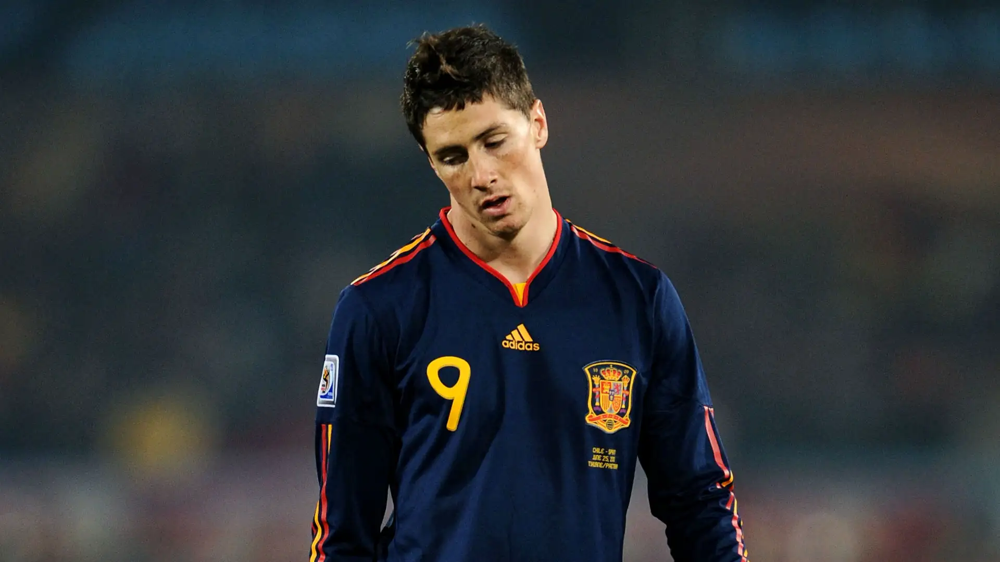

Top 5 "Anti heróis"
1 - Cabeçada de Zidane em Matrazzi
A final da Copa do Mundo de 2006 entre França e Itália prometia ser um duelo épico entre duas potências do futebol, mas o que ninguém esperava era que um momento de fúria mudaria para sempre a história daquele jogo e marcaria a despedida de um gênio.
A caminhada da França até a final não foi das mais lineares, mas a equipe liderada por Zinedine Zidane mostrou sua força nos momentos decisivos. Após uma fase de grupos com empates contra Suíça e Coreia do Sul, e uma vitória sobre o Togo, a França cresceu no mata-mata. Nas oitavas, desbancou a poderosa Espanha com uma vitória por 3 a 1. O ponto alto, sem dúvida, foi a épica vitória por 1 a 0 sobre o Brasil nas quartas de final, com um gol de Thierry Henry após uma jogada magistral de Zidane. Na semifinal, Portugal também sucumbiu ao talento francês, com um gol de pênalti convertido por Zizou, garantindo a vaga na grande final.
Do outro lado, a Itália chegou à final mostrando uma defesa sólida e um ataque eficiente nos momentos chave. Liderando o Grupo E com duas vitórias e um empate, a Azzurra passou por momentos de tensão no mata-mata. Nas oitavas, venceu a Austrália nos minutos finais com um pênalti de Totti. Nas quartas, não deu chances à Ucrânia, goleando por 3 a 0. A semifinal contra a anfitriã Alemanha foi um teste de fogo, com a Itália garantindo a vaga na prorrogação com dois gols nos últimos minutos, selando uma final emocionante contra a França.
A atmosfera no Olympic Stadium, em Berlim, era eletrizante. Duas potências do futebol frente a frente na maior decisão do planeta. O jogo começou com um ritmo intenso. Logo aos 7 minutos, Zidane abriu o placar para a França com uma cobrança de pênalti magistral, um toque sutil de cavadinha que tocou no travessão antes de balançar as redes. A resposta italiana veio rápida, aos 19 minutos, com Materazzi subindo mais alto que a defesa francesa para cabecear um escanteio cobrado por Pirlo. Após os gols, a partida seguiu equilibrada, com as duas equipes se estudando e buscando espaços, mas a tensão era palpável, prenunciando que qualquer detalhe poderia fazer a diferença.
O que aconteceu aos 110 minutos da prorrogação chocou o mundo. Em um momento de nervos à flor da pele, após uma troca de palavras com Materazzi, Zinedine Zidane acertou uma cabeçada no peito do zagueiro italiano. O árbitro Horacio Elizondo, após consultar o quarto árbitro, não hesitou em mostrar o cartão vermelho para o craque francês. A imagem de Zidane caminhando cabisbaixo para fora do campo, passando pela taça da Copa do Mundo, se tornou um símbolo daquele jogo e de sua despedida melancólica do futebol. Aquele instante de fúria de um dos maiores jogadores da história não apenas selou a derrota francesa, mas também marcou o fim de sua brilhante carreira de forma inesperada e controversa, deixando uma interrogação sobre o que poderia ter acontecido se aquele lance não tivesse ocorrido.
Por: Vinicius Sousa
Leia mais
2 - Gol contra Fatal
O gol contra de Andrés Escobar... um lance que infelizmente se tornou muito mais do que um simples erro em campo.
A Copa do Mundo de 1994, realizada nos Estados Unidos, carregava para a seleção colombiana a promessa de uma campanha histórica. Vinda de resultados impressionantes e ostentando uma geração de talentos como Valderrama, Asprilla e o elegante zagueiro Andrés Escobar, a equipe comandada por Francisco Maturana era vista por muitos como uma das favoritas ao título. A goleada por 5 a 0 sobre a Argentina, em pleno Monumental de Núñez, durante as eliminatórias, havia inflamado a paixão dos torcedores e elevado as expectativas a patamares altíssimos. Na Colômbia, o otimismo era contagiante, e a crença em um grande desempenho no Mundial era quase unânime.
A partida contra os Estados Unidos, realizada em 22 de junho de 1994, era de vida ou morte para a Colômbia após a derrota na estreia para a Romênia. Aos 34 minutos do primeiro tempo, em uma tentativa de ataque da seleção americana pela esquerda, o lateral John Harkes cruzou rasteiro para a área. Na ânsia de interceptar a bola e evitar que ela chegasse ao atacante Earnie Stewart, o zagueiro Andrés Escobar se esticou e acabou desviando-a de forma infeliz com o pé direito. A trajetória da bola enganou o goleiro Óscar Córdoba, que nada pôde fazer para evitar que ela entrasse em sua própria meta. O Estádio Rose Bowl, em Pasadena, emudeceu por um instante, enquanto os jogadores colombianos demonstravam incredulidade e Escobar, visivelmente abalado, lamentava o erro crucial.
O gol contra de Escobar teve um impacto imediato no ânimo da equipe colombiana. A pressão para buscar o resultado se intensificou, e a tensão em campo se tornou ainda mais palpável. Apesar dos esforços dos jogadores e das tentativas de ataque, a Colômbia não conseguiu reverter o placar naquela partida. Os Estados Unidos ampliaram a vantagem no segundo tempo, selando a derrota colombiana por 2 a 0. O resultado complicou drasticamente a situação da seleção no Grupo A, culminando em sua eliminação precoce na primeira fase da Copa do Mundo, uma grande decepção para um país que depositava tantas esperanças naquele time.
O gol contra de Andrés Escobar na Copa de 1994 foi muito mais do que um erro infeliz em um jogo de futebol. Ele se tornou um símbolo trágico da brutalidade que, por vezes, se associa à paixão pelo esporte. A eliminação precoce da Colômbia, somada à pressão e à violência que se seguiram, culminaram na morte prematura de Escobar, um evento que chocou o mundo e deixou uma cicatriz profunda na história do futebol. Sua memória, no entanto, transcende aquele lance fatídico, lembrando-nos da fragilidade da vida e da necessidade de um futebol mais humano e tolerante.
Por: Vinicius Sousa
Leia mais
3 - O Pisão de Felipe Melo em Robben

Antes da expulsão de Felipe Melo, a partida entre Brasil e Holanda nas quartas de final da Copa de 2010 apresentava um panorama favorável à seleção brasileira. Após abrir o placar com um gol de Robinho no início do jogo, o Brasil controlou as ações na maior parte do primeiro tempo, criando as melhores oportunidades. No entanto, logo no início da segunda etapa, a Holanda conseguiu o empate com um gol de Sneijder. A igualdade no marcador equilibrou o confronto, com a Holanda ganhando confiança, mas o Brasil ainda buscava retomar a vantagem e parecia ter condições de seguir em frente na competição.
Aos 28 minutos do segundo tempo, em um lance que mudaria drasticamente o rumo da partida, o volante brasileiro Felipe Melo protagonizou uma ação ríspida sobre o atacante holandês Arjen Robben. Após uma disputa de bola na intermediária, com Robben já caído no gramado, Felipe Melo pisou na perna do jogador adversário. A ação não passou despercebida pelo árbitro japonês Yuichi Nishimura, que, sem hesitar, mostrou o cartão vermelho direto para o camisa 5 do Brasil. A imagem de Felipe Melo deixando o campo, visivelmente contrariado, marcava um ponto de inflexão no confronto.
Com a vantagem de um jogador a mais, a Holanda assumiu o controle da partida, ditando o ritmo e explorando os espaços no meio-campo brasileiro. A dificuldade de criação do Brasil se tornou evidente, com a equipe encontrando dificuldades para conectar passes e levar perigo à meta adversária. A pressão sobre a defesa brasileira aumentou consideravelmente, com os atacantes holandeses encontrando mais liberdade para se movimentar e criar oportunidades. A reorganização tática do Brasil, focada em reforçar a marcação, acabou sacrificando a qualidade do ataque, tornando a missão de buscar o empate ou a virada ainda mais árdua.
A expulsão de Felipe Melo contra a Holanda, aos 28 minutos do segundo tempo, representou um ponto de inflexão crucial na partida das quartas de final da Copa de 2010. Antes do cartão vermelho, o Brasil vencia por 1 a 0 e controlava parcialmente o jogo, apesar do empate holandês no início da segunda etapa. A ação ríspida de Felipe Melo sobre Robben desequilibrou a seleção brasileira taticamente e emocionalmente. Com um jogador a menos, o Brasil perdeu poder de marcação no meio-campo e viu a Holanda assumir o controle da partida, explorando os espaços e pressionando a defesa brasileira com mais intensidade.
A vantagem numérica permitiu à Holanda virar o placar poucos minutos após a expulsão, selando a vitória por 2 a 1 e a consequente eliminação do Brasil da Copa do Mundo. A ausência de um jogador importante no meio-campo brasileiro dificultou a criação de jogadas ofensivas e tornou a missão de buscar o empate ou a virada praticamente impossível. Aquele momento de indisciplina de Felipe Melo ficou marcado como um dos fatores determinantes para a queda da seleção brasileira no Mundial da África do Sul.
Por: Vinicius Sousa
Leia mais
4 - Roberto Baggio: O herói e o pênalti maldito
A final da Copa do Mundo de 1994, disputada entre Brasil e Itália no Rose Bowl, em Pasadena, foi um duelo tenso e equilibrado que terminou sem gols após a prorrogação. A decisão do título foi para a disputa de pênaltis, um momento de nervosismo extremo para jogadores e torcedores de ambas as seleções. Após as cobranças iniciais, o Brasil tinha uma ligeira vantagem, colocando ainda mais pressão sobre os italianos.
Roberto Baggio, um dos maiores talentos do futebol mundial e a grande esperança da Itália naquela Copa, caminhou para a marca da cal como o último cobrador de sua seleção. A responsabilidade em seus ombros era imensa: converter o pênalti significava manter a Itália viva na disputa pelo título, enquanto o erro entregaria a taça ao Brasil. O peso da nação italiana repousava em seus pés naquele instante crucial.
Com a respiração suspensa de milhões de espectadores ao redor do mundo, Baggio correu para a bola e a chutou com o pé direito. No entanto, a bola subiu demais, ultrapassando o travessão do goleiro brasileiro Taffarel. O silêncio ensurdecedor no estádio foi quebrado pela explosão de alegria da torcida brasileira, que via o tetracampeonato se concretizar. A imagem de Baggio parado, cabizbaixo, com o olhar perdido no vazio, tornou-se um símbolo daquele momento.
Aquele erro na final da Copa do Mundo inevitavelmente marcou a carreira de Roberto Baggio. Apesar de ser um jogador genial, com passagens brilhantes por grandes clubes e pela seleção italiana, aquele pênalti perdido ficou como uma cicatriz em sua trajetória. Para muitos, foi uma despedida amarga de um craque que carregou a Itália nas costas durante toda a competição.
reação na Itália após a derrota foi de profunda tristeza e desapontamento. Baggio, apesar de ter sido o artilheiro da equipe na Copa, foi alvo de críticas, embora muitos reconhecessem o peso da responsabilidade que ele carregava. No entanto, com o tempo, a imagem de Baggio evoluiu, e aquele momento trágico passou a ser visto também como um símbolo da fragilidade humana e da pressão implacável do futebol em seu mais alto nível.
Por: Vinicius Sousa
Leia mais
5 - Fernando Torres na final da Copa do Mundo de 2010

A chance perdida por Fernando Torres na final da Copa do Mundo de 2010 contra a Holanda é um daqueles lances que ilustram perfeitamente a crueldade do futebol em momentos decisivos. O contexto da partida, já na prorrogação e com o placar ainda em 0 a 0, elevava a oportunidade a um patamar de ouro para a Espanha.
O lance se desenvolveu em um contra-ataque rápido da seleção espanhola. Fernando Torres recebeu um lançamento longo em velocidade, invadindo a área holandesa livre de marcação. Com espaço e tempo para dominar a bola e escolher o canto, o atacante espanhol, talvez pela ansiedade ou pelo cansaço da prorrogação, se atrapalhou no domínio. A bola escapou um pouco, e ele acabou chutando de forma desajeitada, sem direção, para fora do gol defendido por Stekelenburg.
Aquele gol perdido por Torres, naquele instante da final, poderia ter dado o título inédito à Espanha antes mesmo do gol salvador de Iniesta. A frustração no rosto de Torres e a incredulidade dos torcedores espanhóis eram evidentes. Aquele era o momento de consagrar a brilhante campanha da Espanha, mas a chance escorreu por entre os dedos do atacante.
Apesar da chance perdida, a Espanha acabou conquistando o título minutos depois, com o gol de Iniesta. No entanto, a chance desperdiçada por Fernando Torres ficou marcada como um momento de tensão máxima naquela final, um lembrete de que mesmo os maiores craques estão sujeitos a falhas em momentos cruciais.
Essa jogada, portanto, entra para a nossa galeria de "anti-heróis" por um gol perdido em um dos palcos mais importantes do futebol mundial. Um lance que poderia ter selado a vitória de sua equipe, mas que, por um instante, deixou a nação espanhola com o coração na mão.
Por: Vinicius Sousa
Leia mais